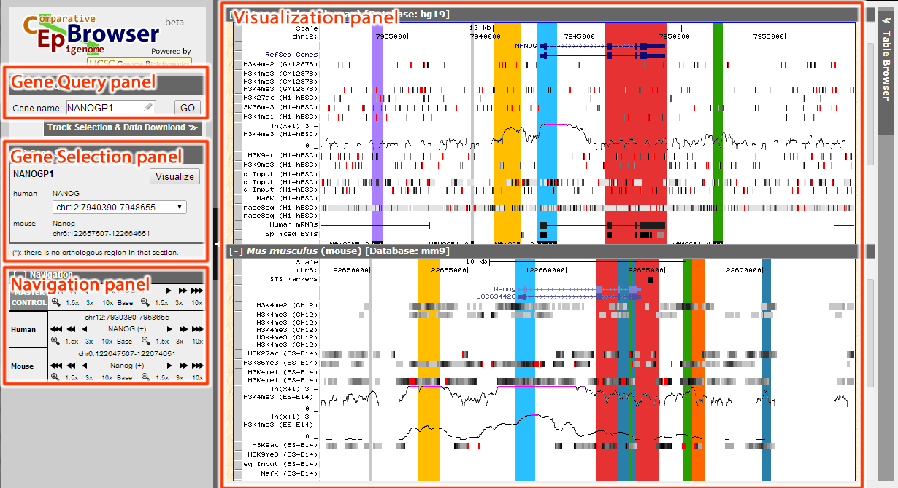
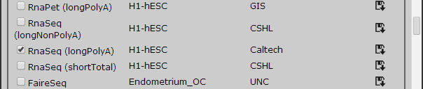
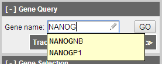

An Example of CEpBrowser with ENCODE Data
Index
The interface of CEpBrowser can be seen in the figure below. Basically, it's divided into several panels. Gene Query panel is used to search for the genes of interest; Gene Selection panel is used to choose among multiple genes, or among multiple homologous genes; Navigation panel is used to navigate (simultaneously through all species, or within individual species); Visualization panel is the main panel to display all results.

Figure 1. GUI of CEpBrowser
There is a detailed manual for CEpBrowser and we will focus on the example below.
In this case study, we will focus on ES cells between human and mouse for comparison. By clicking Track Selection & Data Download, we can open Tracks & Data panel.
CEpBrowser has already linked human H1-hESC with mouse ES-E14 in Common tracks, by simply choosing ESC in Choose sample type, we can select these two cell lines.
Figure 2 Select ESC as sample type.
There are other cell lines that have not been yet linked but may be linked in the future. In this case, we will need RNA-Seq for human H1-hESC and RNA-Seq for mouse ES-Bruce in Unique tracks for demonstration purpose. All tracks are alphabetically ordered by sample type.


Figure 3 Adding additional tracks, these tracks will be linked in future release.
After selected the tracks, click Update to continue.
In Gene Query panel we are able to select the gene we would like to study. CEpBrowser will provide hint for partial gene name and aliases, after filling in the gene name "NANOG", click GO to continue.

Figure 4 Search for NANOG in Gene Query panel.
Gene Selection panel will show the gene that satisfy the search criteria. NANOG has two homologous sequences in human (named NANOGP1 and NANOG), which is shown as a drop-down menu in human. By selecting the item in this drop-down menu, we can specify which homolog we would like to visualize.

Figure 5 NANOG has two homologs in human.
After selected the second region (chr12:7930390-7958655), click Visualize to continue.
When visualized in CEpBrowser, we can toggle the display of all tracks by clicking the track directly (or click the grey button as is shown in manual). Navigation panel can be used to zoom in/out, and moving around the gene.
The Visualization panel has marked orthologous sequences with corresponding color, so that the regions of the same color are orthologous sequences between the species.
From the result we can see that the yellow region before the annotated NANOG promoter appears to have H3K4me3 marker and RNA-seq signal in both species, which may suggest further investigation.

Figure 6 H3K4me3 signal of the yellow region between the two species.

Figure 7 RNA-seq signal of the same region